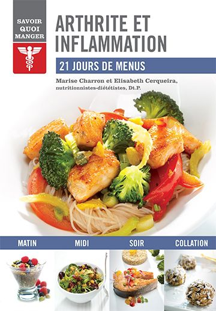
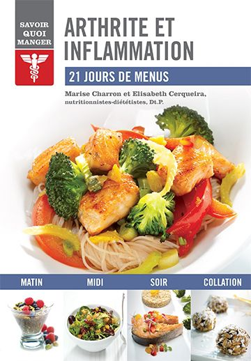

Une alimentation adaptée à vos besoins !


 


Il est souvent compliqué de trouver l’alimentation adaptée à nos besoins, et ce, que ce soit parce que nous sommes aux prises avec le diabète, l’arthrite ou les maladies cardiovasculaires. Comment s’y retrouver parmi les aliments à adopter ou ceux à éviter et surtout, comment créer son propre plan alimentaire ? Des nutritionnistes québécoises se sont penchées sur la question, soucieuses de répondre aux besoins de plus en plus ciblés de leur clientèle.
Unique en son genre, la collection Savoir quoi manger offre une approche simple et facile à suivre avec :
- des recommandations alimentaires vulgarisées pour permettre de bien comprendre pourquoi certains aliments sont à privilégier et d’autres à éviter;
- quelques restrictions, mais surtout de nombreuses suggestions pour varier à volonté son alimentation;
- des conseils pratiques pour prendre de nouvelles habitudes alimentaires;
- des menus établis pour 21 jours;
- des recettes faciles à réaliser agrémentées d’informations nutritives.
En bref, tout ce qu’il faut savoir pour démystifier son alimentation.
Colorés, épurés, simples et illustrés, les titres de la collection Savoir quoi manger sont de véritables coups de cœur.
Diabète
par Alexandra Leduc, Dt.P.
Pour une personne diabétique, surveiller son alimentation est fondamental. De saines habitudes alimentaires peuvent non seulement atténuer les symptômes, mais aussi prévenir l’apparition de complications liées au diabète.
Ce guide répond spécifiquement à vos besoins en vous permettant :
- de comprendre le diabète et les mécanismes de régulation de la glycémie grâce à l’alimentation;
- de répondre efficacement à vos besoins énergétiques en décryptant les étiquettes nutritionnelles;
- de profiter de recommandations claires pour identifier facilement les bons et les mauvais ingrédients;
- de planifier et de diversifier vos repas et vos collations grâce à des menus quotidiens adaptés à votre état de santé.
Acheter le livre : Diabète
Hypoglycémie
par Alexandra Leduc, Dt.P.
Vous souffrez régulièrement de baisses d’énergie subites, d’étourdissements, accompagnés ou non de sueurs et de tremblements… un état de faiblesse qui disparaît aussitôt après avoir ingéré du sucre? Et pourtant, vous n’êtes pas diabétique! En cas d’hypoglycémie, le seul traitement est l’alimentation.
Ce guide répond spécifiquement à vos besoins en vous permettant :
- de comprendre l’hypoglycémie réactionnelle et d’identifier vos besoins nutritionnels;
- de stabiliser votre glycémie et ainsi prévenir les baisses soudaines d’énergie;
- de bénéficier de recommandations claires pour conserver votre énergie tout au long de la journée;
- de planifier vos repas et de prévoir vos collations grâce à des menus quotidiens adaptés à votre rythme.
Acheter le livre : Hypoglycémie
Arthrite et inflammation
par Marise Charron, Dt.P. et Elizabeth Cerqueira, Dt.P.
Vos articulations sont gonflées et douloureuses? Vous avez du mal à vous lever le matin, à marcher et à monter des escaliers?
Même si aucun régime alimentaire ne peut soigner l’arthrite, une alimentation anti-inflammatoire peut vous aider à réduire vos douleurs articulaires.
Ce guide répond spécifiquement à vos besoins en vous permettant :
- de comprendre les différents types d’arthrite et d’inflammation, et d’évaluer les facteurs de prédisposition;
- de profiter de recommandations claires et précises pour identifier facilement les meilleurs aliments;
- de planifier et de diversifier vos repas et vos collations grâce à des menus quotidiens adaptés à votre état de santé.
Acheter le livre : Arthrite et inflammation
Maladies cardiovasculaires
par Nathalie Verret, Dt.P.
Réduisez les risques de maladies cardiovasculaires grâce à une alimentation équilibrée et une pratique régulière d’activités physiques. Vous pourrez ainsi non seulement réduire votre cholestérol sanguin et améliorer votre tension artérielle, mais aussi maintenir ou diminuer votre tour de taille.
Ce guide répond spécifiquement à vos besoins en vous permettant :
- de comprendre les maladies cardiovasculaires et d’en savoir plus sur les diètes qui ont fait leurs preuves;
- d’améliorer votre bilan lipidique en adoptant de saines habitudes alimentaires;
- de profiter de recommandations claires pour identifier facilement les aliments qui favorisent la santé de votre cœur ainsi que ceux qui y nuisent;
- de planifier et de varier vos repas et vos collations grâce à des menus quotidiens adaptés à votre état de santé.
Acheter le livre : Maladies cardiovasculaires
À venir…
Parutions à venir en 2014 :
- Syndrome du côlon irritable
- Ménopause
- Intolérance au gluten
- Cholestérol
- Anémie
- Obésité
- Hypertension
- Ostéoporose